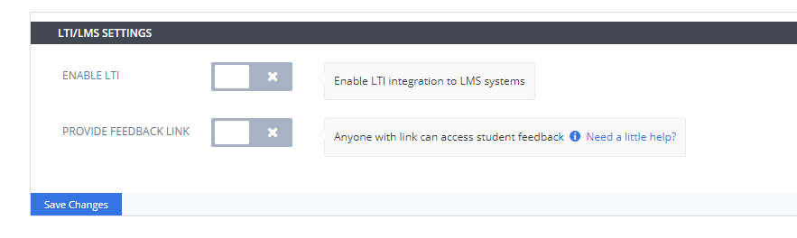
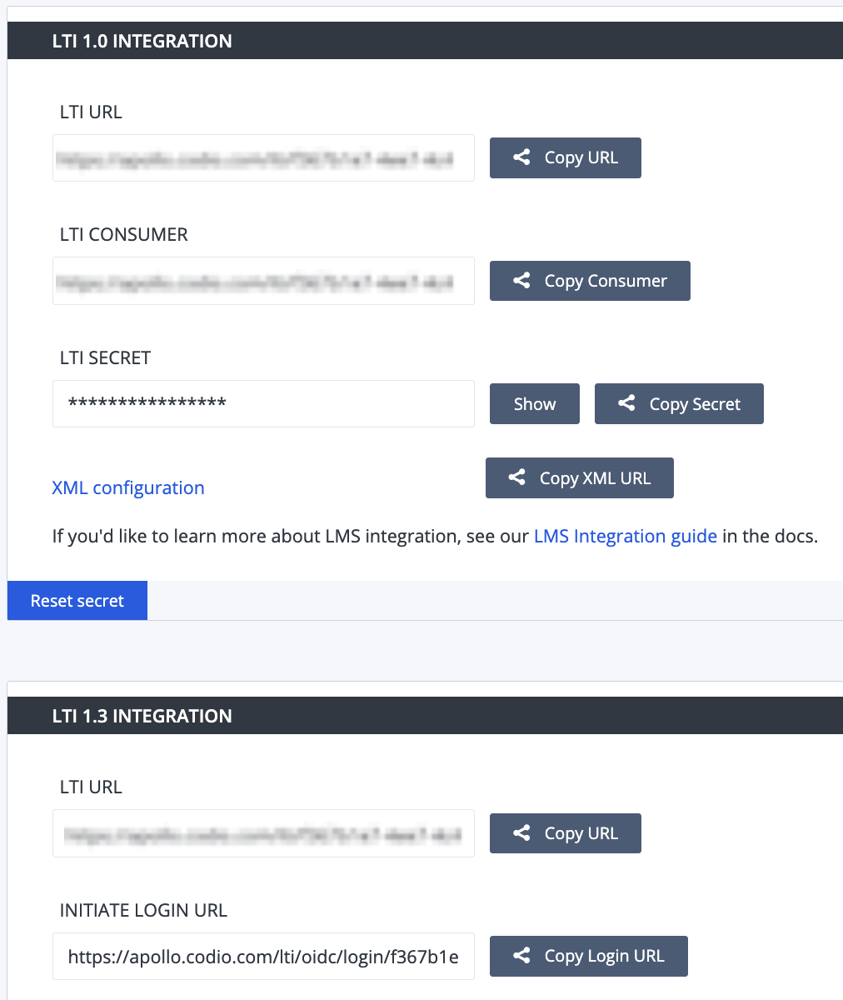
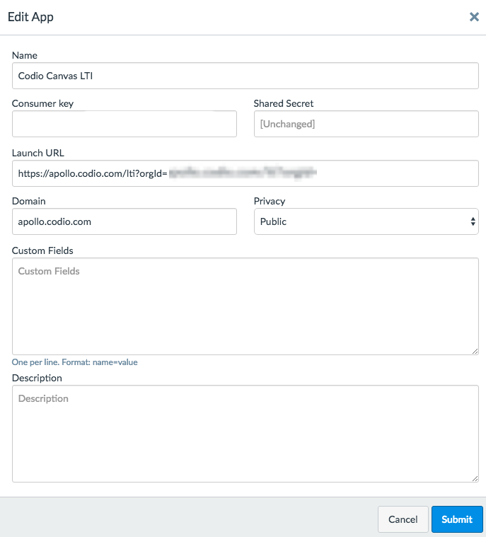
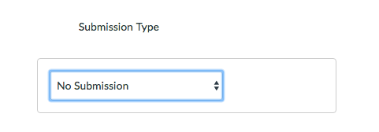

LTI 1.1 Setup¶
Integrating with Canvas using LTI App¶
This method is recommended.
The Codio LTI App method allows for an easy way to integrate and to map Codio course assignments to Canvas. Access the directions at LTI App(LTI 1.1 Only) page. If you are not able to use the LTI App, follow the manual integration directions below.
Note
Configuring your LTI settings using the LTI App is only for the US version of Codio. It will not work with Codio UK (codio.co.uk).
Integrating with Canvas Manually¶
In Codio¶
Enable LTI for Your Course¶
|
 |
Bring up the LTI Integration Information¶
|
 |
In Canvas, Adding Codio as an App¶
The Canvas user who carries out these steps must be a system administrator.
Create a new Course in Canvas. We suggest you create a test course called Codio Canvas before you do it with a production course.
Select the Course.
Click on Settings in the left set of options.
In the top links, select Apps.
Click the large button View App Configurations.
Click on the blue + App button.
In Codio and Canvas¶
We will now copy the following global integration fields from Codio to Canvas.
LTI Consumer -> Consumer Key
LTI Secret -> Shared Secret
LTI URL -> Launch URL
In Canvas you should then use one of the following steps:
Option 1: By URL¶
Enter a suitable name (Codio Canvas LTI) in the Name field.
In Codio select the Copy Consumer button to copy in to the Consumer Key field.
Select the Copy Secret Key to copy in to the Shared Secret field.
Select the Copy XML URL to copy in the to the Config URL field.
Submit
Option 2: Paste XML¶
Enter a suitable name (Codio Canvas LTI) in the Name field.
In Codio select the Copy Consumer button to copy in to the Consumer Key field.
Select the Copy Secret Key to copy in to the Shared Secret field.
Click on the
XML Configurationlink to open the XML and then copy in the to the XML Configuration field.Submit.
Option 3: Manual Entry¶
You should have an output similar to the image on the right. |
 |
Course LMS URL¶
This URL ensures that Codio knows how to redirect students back to the correct Canvas course should they attempt to access the course through their dashboard. You need to perform the following actions one time only for a course. The Canvas user who carries out these steps does not need to be a system administrator but must have suitable privileges to edit courses and assignments.
In Codio, go to your course and click on the LTI/LMS tab.
Go to the LTI/LMS Settings area.
At the top is a switch Enable LTI which you should check is enabled.
Below this is an empty field Course LMS URL. Switch back to Canvas and make sure you are on the Home page of the course. Copy the url in the address bar of your browser to the clipboard and paste it into the above mentioned field in Codio. The url format should end with something like
/courses/1121212although the number will be different.
Mapping an Assignment to a Canvas Assignment¶
The final mapping step needs to be taken for each individual assignment within Codio. It maps a Canvas assignment to a Codio assignment.
In Canvas¶
Make sure you are in the Courses area.
Click on the Assignments link in the left hand side.
Provide a name for the Assignment.
Set the points for the Assignment. When the grades get passed back later, the Codio percentage score will be scaled to the points value you specify here.

Scroll down and look for the Submission Type field.
You should now click on the dropdown list and select External Tool.
Specify the assignment using one of the two options:
Add by Resource Selection Preview (recommended)
Click the Find button.
Click the Codio tool.
Select the assignment you want to map to your course in Canvas.
Add by LTI Integration URL
Return to Codio and navigate to the course. Ensure you are in Teach mode.
To the right of the assignment, click the icon with 3 blue dots and select LTI Integration URL. You should copy the LTI integration url to the clipboard by clicking on the field (it will auto copy).
Paste the LTI Integration URL in the URL field under Enter or find an External Tool URL.
Select Load This Tool In a New Tab.
Click the Save and Publish button.
Make sure the Canvas course is published.
Common Cartridge¶
In the Canvas course you have created go to Settings and Import Course Content and select Common Cartridge 1 x Package and proceed to upload the .ismcc file.
If using the Common Cartridge file to import the Codio course assignment details into Canvas, each assignment needs mapping as above using the Add by Resource Selection Preview (recommended) method noted above.
Authentication and Account Creation¶
To add students/teachers see Users account creation